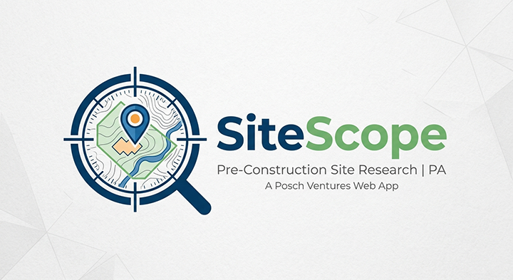

Faith Focus Friend
Helps kids stay engaged during services by listening for words parents choose.
View App
An independent portfolio of digital products and ventures.
Mobile apps and web tools for families and trades.
Helps kids stay engaged during services by listening for words parents choose.
View AppPrayer companion—lists, answered prayers, Bible notes, and daily encouragement. Local-first, on your device.
View App
Track tools by drawer, manage loans, scan barcodes, and export reports—local-first, on your device.
View AppPersonal book tracker—library, reading progress, ISBN lookup, loans, and exports. Local-first, on your device.
View AppWeb-based framing takeoff for estimators—joists, studs, roof framing, and sheathing—so you can price lumber without waiting on the yard.
Open App
Pre-construction site research for Pennsylvania—parcels, flood zones, soil, topography, and municipal data on a map.
Open AppResidential and commercial drawing review checklists—work through plans, export PDF, and share with your team.
Open AppField checklist for estimators—scope kitchen, bath, addition, and custom home work so nothing gets missed on the bid.
Open AppMore tools and apps in development.
Some of the best ideas start with a real problem and a person who cares enough to do something about it.
I'm Eric, a dad and indie app developer with the heart of a teacher. I've spent years investing in kids and the teachers and parents who show up for them every day. That experience shapes much of what I build.
Posch Ventures is my small corner of the app world, a place where practical tools meet genuine purpose. Some apps here are built for the construction and trades world, solving real estimating and organization problems I've seen firsthand. Others are built for classrooms, living rooms, and church pews, because kids deserve access to tools that make learning more engaging without it costing their parents and teachers a thing. Equipping the people who invest in the next generation is enough motivation for me.
The mission-driven apps are free. Always. That's not a business strategy, it's just what feels right.
I'm still building. Some of these are finished, some are almost there, and a few only exist in my head for now. But every one of them started with a real need, a real person, or a real moment, and that's enough to keep going.
Thanks for being here.
— Eric